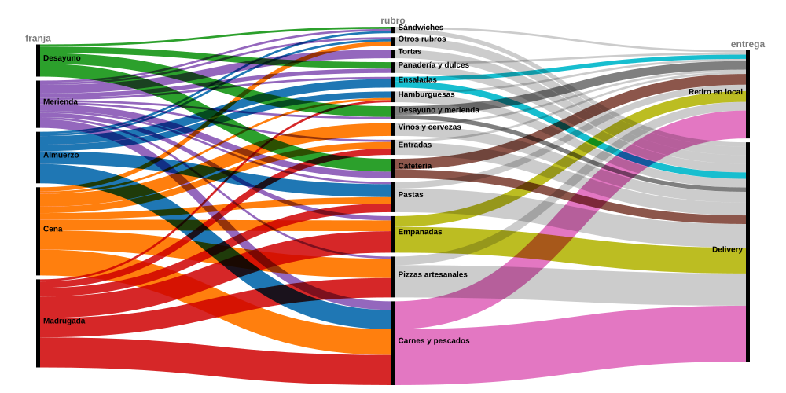

Este proyecto analiza cinco semanas de pedidos de La Percanta, un restaurante de Puerto Madero cuya aplicación de pedidos es un proyecto propio. A partir de los datos de esa base exploro a qué hora come el barrio, qué pide en cada momento del día, cuánta carta sobra y si el local cumple los tiempos que promete.
Qué estás mirando. La base tiene 158 pedidos entre el 1 de agosto y el 5 de septiembre de 2026. Los cuatro gráficos usan los 143 que se entregaron, dejando afuera los 15 cancelados: un pedido cancelado no es trabajo hecho ni plata cobrada. Todas las cifras de esta página están calculadas sobre esos 143.
De dónde salen. La carta es real —357 productos con sus precios y
códigos—, y 58 pedidos se leyeron de la base de producción. Los otros 100 fueron
generados sobre esa misma carta, porque la aplicación se puso en
marcha hace poco y su volumen real todavía no alcanza para leer patrones. La columna
lote de los CSV distingue unos de otros (R real,
S generado) y el detalle del método está
al final de la página.
Datawrapper
Un restaurante no trabaja parejo. Cruzando los siete días de la semana con las cinco franjas del servicio aparece el pico: el sábado a la cena, con 14 pedidos. La columna de la derecha responde la pregunta operativa de fondo, que es qué días sale más trabajo del local: el sábado saca 36 pedidos y el lunes apenas 8, cuatro veces y media menos. Ojo con la franja «Madrugada»: no es el barrio pidiendo de noche, son pedidos que cargué yo probando la aplicación entre la 1 y las 4 de la mañana, con el local cerrado. Son 41 de los 58 pedidos reales, así que esa columna habla del desarrollo de la app y no del negocio.
RawGraphs
Cada línea es un pedido. Entra por la franja en que se hizo, pasa por el rubro que más facturó dentro de ese pedido y sale por la forma en que se entregó; cuanto más gruesa la cinta, más pedidos hicieron ese mismo recorrido. El desayuno es café y panadería: 14 de sus 15 pedidos tienen su plato principal en Cafetería, Panadería y dulces o Desayuno y merienda, y la única cinta que se escapa es un Panini de Lomo. Las pizzas van al revés y son todavía más marcadas: 18 de los 19 pedidos de pizza son de la cena o de la madrugada. En el medio, entre el almuerzo y la merienda, no manda nadie con claridad: Carnes y pescados lidera el almuerzo con 9 de 24, y en la merienda empata 4 a 4 con Tortas. A la derecha, el delivery se lleva 102 de los 143 pedidos, pero no parejo: en el desayuno casi la mitad se retira por el local y en la cena solo uno de cada cinco.

Flourish
Cada rectángulo es un plato, agrupado por rubro y dimensionado por lo que facturó; se puede tocar un rubro para entrar. Solo aparecen los 147 productos que se vendieron al menos una vez en los 143 pedidos entregados, así que los 210 que nunca se vendieron son literalmente el espacio en blanco del gráfico. La concentración es brutal: 25 productos —el 7% de la carta— hacen la mitad de la facturación, y un solo plato, el Pollo Grille, facturó $296.000, más que todo el rubro Entradas junto, que tiene 25 platos.
Tableau Public
Cuando entra un pedido la app le canta un tiempo al cliente: 50 minutos si es delivery, 30 si lo pasa a buscar. El historial de estados guarda cuánto tardó de verdad. Acá cada punto es uno de los 136 pedidos entregados con la demora medida: la hora en que entró en el eje horizontal, los minutos que tardó en el vertical, y el color según cómo terminó — verde si llegó dentro de lo prometido, amarillo si se pasó hasta 10 minutos, rojo si se pasó más. La mitad de los pedidos es verde, pero están muy mal repartidos: en el delivery 61 de 99 llegan a tiempo; en el retiro por mostrador, apenas 7 de 37. Y los rojos no se reparten parejo a lo largo del día: se amontonan de noche, cuando la cocina tiene todo junto. Es al revés de lo que uno esperaría — el pedido que no sale a la calle es el que más incumple, porque los 30 minutos que promete son demasiado ajustados.

Las cuatro preguntas terminan contando lo mismo desde ángulos distintos: La Percanta es un local mucho más chico y más concentrado de lo que su carta declara. Ofrece 357 productos pero factura con 25. Abre todos los días pero hace en un sábado lo que hace en cuatro lunes y medio. Y la promesa que peor cumple no es la difícil —salir a la calle— sino la fácil: los 30 minutos del retiro por mostrador, que falla 8 de cada 10 veces.
Si tuviera que recomendar tres cosas a partir de estos gráficos serían: podar la carta empezando por los 210 platos que no se vendieron nunca, mover gente al sábado a la noche en lugar de repartirla pareja, y subir el tiempo prometido del retiro de 30 a 40 minutos, que es lo que realmente tarda. Ninguna de las tres se veía en la base; se ven en los gráficos.
La aplicación de pedidos de La Percanta está hecha con Next.js y PostgreSQL sobre Supabase. Los datos se extrajeron de esa base con consultas de solo lectura.
| Archivo | Filas | Qué contiene |
|---|---|---|
| datos/pedidos.csv | 158 | Un pedido por fila: momento, forma de entrega, medio de pago, rubros que tocó, detalle de lo pedido y montos. 143 entregados y 15 cancelados |
| datos/renglones.csv | 326 | Un producto pedido por fila, con sus modificadores (guarnición, tamaño, corte) |
| datos/carta.csv | 357 | La carta completa del local, con códigos y precios reales |
Sobre el universo. Los cuatro gráficos usan los 143 pedidos entregados. El de Tableau usa 136 de esos 143: los otros siete son pedidos reales cuyo tiempo no se puede medir, porque los estados se avanzaron a mano durante las pruebas de la aplicación y registran demoras de entre 1 y 18 minutos. No miden servicio, así que quedaron sin dato en lugar de ensuciar el promedio.
Sobre los rubros. La carta tiene una categoría «Recomendados» que no es un rubro sino una vidriera: son diez platos destacados que ya pertenecen a su rubro real. Cada uno se cuenta en el suyo —la Milanesa de Ternera en Carnes y pescados, la Empanada de Carne Suave en Empanadas— y así quedan 17 rubros reales. El diagrama aluvial le da nombre propio a todo rubro con tres pedidos o más; los cuatro que quedan por debajo van a «Otros rubros».
Sobre la muestra. De los 158 pedidos, 58 son reales y 100 fueron generados sobre la carta real. Los generados se calibraron contra los reales —ticket promedio, productos por pedido, proporción de delivery y de cancelados— y usan exactamente los mismos precios y grupos de modificadores. Hay que decir además que de los 58 reales, 41 son las pruebas de madrugada del propio desarrollo: el volumen genuinamente comercial de la app es todavía chico, y por eso la muestra se amplió.
Sobre las personas. No se exportó ningún dato personal. Los nombres de cliente son seudónimos asignados de forma estable; no hay teléfonos, direcciones ni correos en ninguno de los archivos publicados (Ley 25.326).